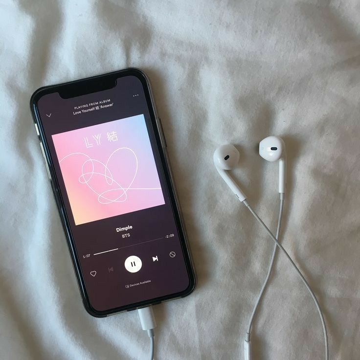

WELCOME TO AZYAN'S SPACE!
NURUL AZYAN

Assalamualaikum, my name is Nurul Azyan Syafiqah Binti Toharudin. My friends or close acquaintancess will called me either Yan or Azyan. I was born on 4th May 2000 at Hospital Besar Kuala Lumpur. I am an ambivert person which I have both introvert and extrovert personality. To be honest, I can easily communicate with new people who are happy to meet me, I feel extremely comfortable with them. It also depends on someone who i meet, i can be shy too. Also, I'm a cat's lover and I haveS two cats at home and both of them are so adorable:) 
Recently, I got into so many things which I am really into watching anime, korean drama and listening to music. Anime and Korean drama has become my new favorite hobbies. Besides, spending my time listening to music has always been my go to activity all the time. My love for music can be traced back to when I was in primary school. As I used to dance and sing alone while listening to it. Also, music could calm me down whenever I sad and stressed.
My elementary school is Tabika Kemas. In 2007 until 2012, my primary school that I studied at is Sekolah Kebangsaan Desa Tun Hussein Onn. Next, my high school is Sekolah Menengah Agama (Arab) Ilmi. I studied at my high school since 2013 until 2017. My high school is a religious school so I have to learnt special subject which is Arabic. For the current one, I continued my diploma year for 5th semester at UITM Rembau Campus at Negeri Sembilan. I choose Information Management as my course first option. To be honest, some subject is kinda tough to score but it was fun anyway. I had so much fun studying about different things using computer, coding, cataloging and more!


Before I enter UITM Rembau, I get to studied at MSU at Shah Alam. I took Diploma in early childhood education. It was really fun as I get to make friends with different race and country. Unfortunately, I didn't get to complete my first semester because i got offered to study at UITM Rembau and UPSI. But, I choose to study at Rembau because it was my first option and I want to try challenge myself with new things. During my sem break, I worked at EZ Qurban at Gombak. I met so many people and gain so many knowledge and skills at workplace. I get to learn how to use excel correctly because my colleagues taught me very nicely. All of them are so nice and it was really enjoyable moment.

Hello! This is my contact information, if you have any inquiries, please send me your information to my email.
Lets get in touch. Send me a message: